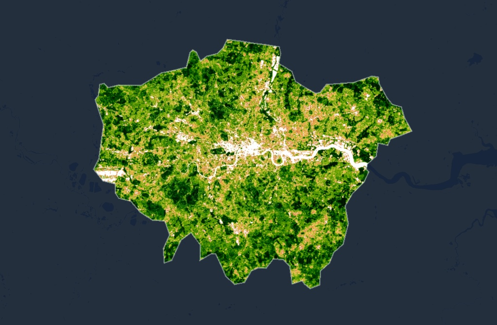
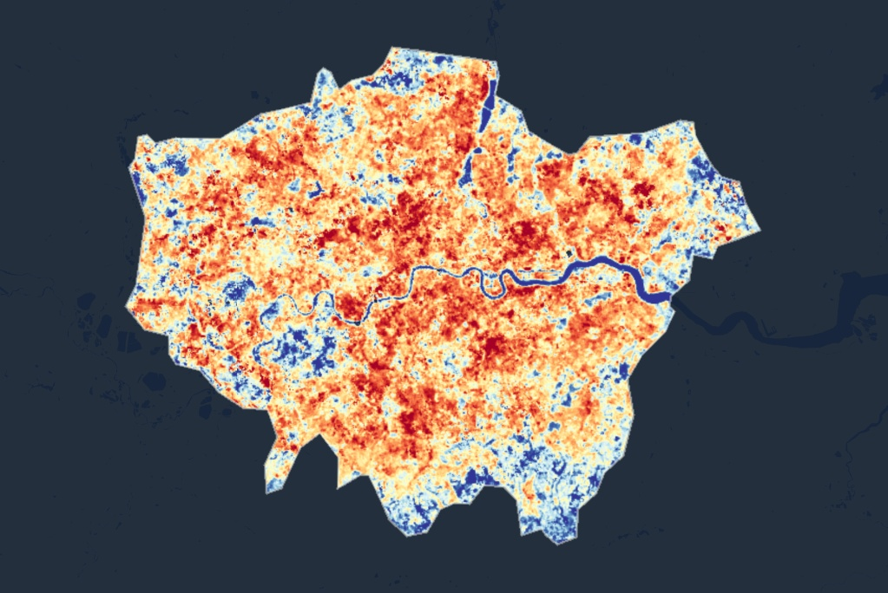

Week 4 Learning Diary: Policy Applications - The London Plan
Summary
This week shifted from technical image processing to the strategic question of how Earth Observation (EO) data can be embedded within urban policy frameworks. The core tension explored in the lecture is the persistent disconnect between what remote sensing can measure and what local governments actually need to make decisions — a gap that is institutional and communicative as much as it is technical (Gerasopoulos et al. 2022).
Urban policies operate across nested scales. At the global level, the United Nations Sustainable Development Goal 11 (Sustainable Cities and Communities) and the New Urban Agenda set broad targets for inclusive, safe, resilient, and sustainable urban environments. At the national/metropolitan level, statutory planning documents translate these aspirations into enforceable frameworks. At the local level, borough or district authorities must implement these frameworks through specific land use decisions, building regulations, and infrastructure investments. The challenge is that EO data — which excels at providing spatially consistent, repeatable measurements across entire metropolitan areas — is most naturally aligned with the metropolitan scale, while the decisions that determine whether a tree gets planted or a cool roof gets installed happen at the local scale.
For this case study I selected Greater London, focusing on two intersecting policies within the London Plan (Greater London Authority 2021):
Policy G5 (Urban Greening Factor): Requires major developments to contribute to urban greening, quantified through a scoring system that weights different types of green and blue infrastructure. The policy establishes a target Urban Greening Factor (UGF) of 0.4 for predominantly residential developments and 0.3 for commercial.
Policy SI4 (Managing Heat Risk): Requires developments to reduce potential overheating through the cooling hierarchy — minimise internal heat gain, then reduce reliance on air conditioning through passive measures, then use green infrastructure for localised cooling before resorting to mechanical systems.
Both policies share a common spatial logic: they require knowing where vegetation is insufficient and where heat exposure is greatest at a resolution fine enough to inform site-specific planning decisions. This is precisely what EO data can provide — but the data must be translated from pixel values into formats that planning officers can act upon.
Application
To demonstrate how EO data directly supports these policy goals, I generated two spatial datasets for Greater London using Landsat 8/9 imagery from summer 2023:
- Normalised Difference Vegetation Index (NDVI) to map green infrastructure coverage, directly relevant to Policy G5’s greening targets
- Land Surface Temperature (LST) to identify heat-vulnerable areas, directly relevant to Policy SI4’s cooling hierarchy


The spatial relationship between Figure 5.1 and Figure 5.2 illustrates a well-documented pattern: areas with low vegetation cover correspond to elevated land surface temperatures. Li et al. (2022) demonstrated this relationship quantitatively across 11 Texas cities, finding that historically redlined neighbourhoods — which received systematically less green infrastructure investment — exhibit LST values 2–5°C higher than surrounding areas, with corresponding increases in heat-related emergency department visits. Their study used a spatial error model (familiar from CASA0005) to control for spatial autocorrelation, showing that the NDVI-LST-health relationship is not merely a visual correlation but a statistically robust pathway with direct equity implications.
For London specifically, the challenge is translating metropolitan-scale EO evidence into borough-level action. Wellmann et al. (2020) reviewed the use of remote sensing in urban planning and found that while EO data is increasingly cited in academic urban ecology research, its uptake in actual planning instruments remains limited — largely because planners require information at the parcel or block scale, whereas freely available satellite imagery (Landsat at 30 m, Sentinel-2 at 10 m) operates at neighbourhood scale. The authors argue that effective integration requires not just higher resolution data, but intermediary products — heat vulnerability indices, green deficit maps, canopy change alerts — that package raw spectral data into planning-relevant formats.
Martinez and Labib (2023) provide a particularly relevant example, demonstrating how NDVI derived from Sentinel-2 can be used to assess greenness exposure at scales relevant to health policy. They found that the choice of NDVI threshold, buffer distance, and temporal compositing method all significantly affect exposure estimates — meaning that two analyses of the same city using slightly different methodological choices could produce contradictory policy recommendations. This underscores a point made in the lecture: EO data is not self-interpreting, and the analytical decisions between raw imagery and policy-relevant output involve judgement calls that should be made transparent.
The practical implication for the London Plan is that Policies G5 and SI4 could benefit from an operational EO monitoring framework — for example, annual borough-level NDVI composites from Sentinel-2 to track Urban Greening Factor compliance, combined with Landsat-derived LST anomaly maps to identify emerging heat risk hotspots. The Copernicus Urban Atlas already provides land cover classification at 2.5 m resolution for European cities, but it is updated only every 6 years — far too infrequent for monitoring the incremental greening that Policy G5 mandates. A Sentinel-2-based monitoring system operating at annual or seasonal frequency would fill this gap at minimal cost, since the imagery is freely available and the processing can be automated through Google Earth Engine.
Reflection
This week reframed how I think about the relationship between remote sensing and policy. The technical capability to map NDVI and LST across a city is, in a sense, the easy part — what Gerasopoulos et al. (2022) call the “supply side” of Earth observation. The harder challenge is the demand side: understanding what planning officers, public health teams, and elected officials actually need, and packaging EO outputs in formats that connect to their existing workflows and decision timelines. Mapping NDVI and LST for London produces visually compelling outputs, but unless those outputs are linked to specific borough responsibilities, budget cycles, and statutory reporting requirements, they remain academic exercises rather than governance tools.
One tension I found particularly interesting is green gentrification. Policy G5 mandates increased greening in new developments, and the LST evidence clearly shows that the most heat-vulnerable communities are in the densely built-up inner boroughs with the least vegetation. But investing in green infrastructure in these areas — new parks, street trees, green roofs — tends to increase property values and rental costs, potentially displacing the very populations the intervention is meant to protect. This is not a problem that EO data can solve, but it is a problem that EO-informed analysis must acknowledge: spatial targeting of greening interventions without complementary housing affordability protections could worsen the inequalities it claims to address. Li et al. (2022)’s finding that historically disinvested neighbourhoods bear the greatest heat burden makes this especially pointed — the areas most in need of greening are also the areas most vulnerable to displacement if greening succeeds.
Looking ahead, I can see how combining the technical skills from Weeks 1–3 (atmospheric correction, spectral indices, texture analysis) with the policy framing from this week could produce genuinely useful analysis. For example, a time-series analysis of Sentinel-2 NDVI across London boroughs could quantify whether Policy G5 is actually delivering measurable increases in vegetation cover since its adoption — a question that the GLA currently has no systematic way to answer at scale.